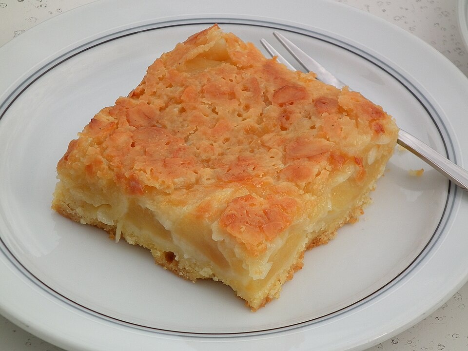

Home
German Apple Cake

Photo by 4028mdk09, licensed under
CC BY-SA 3.0
.
Description
Cacio e Pepe means "cheese and pepper" from italian. It has a smooth, creme texture, and it is not difficult to make.
Still, you need to be a bit careful, as the cheese can become lumpy.
Ingredients(4 servings)
- 450g spaghetti
- olive oil
- 2 minced glove of garlic
- 1 table spoon ground black pepper
- 200g pecorino romano cheese
- 2l pasta water
Steps
- Boil your spaghetti in salted water for about 8 minutes. Keep some of that pasta water!!!
- Grate a picorino cheese.
- Season chickine breasts on both
- Place flour, beaten eggs, and panko into separate dishes.
- Coat chicken breasts in flour, shaking off any excess.
- Dip into egg, and then press onto panko crumbs until well coated on both sides.
- Heat oil in a large skillet over medium-high heat. Place chicken in the hot oil.
- Fry until golden brown, 3 or 4 minutes on each side. Transfer to a plate with the paper towel. Let the oil drain.
- Serve and enjoy!